1.安装
官网：https://qameta.io/allure-report
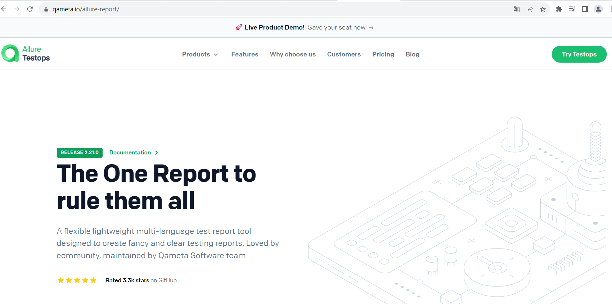
下载
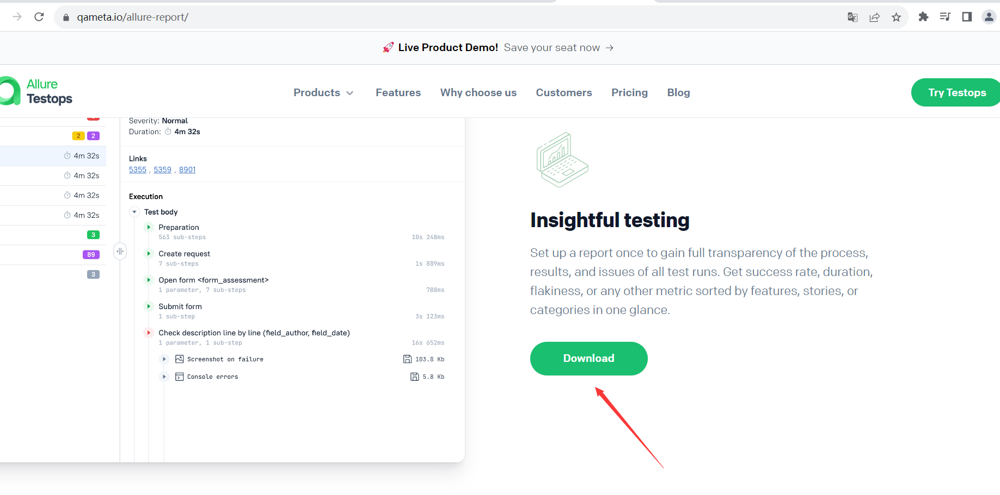
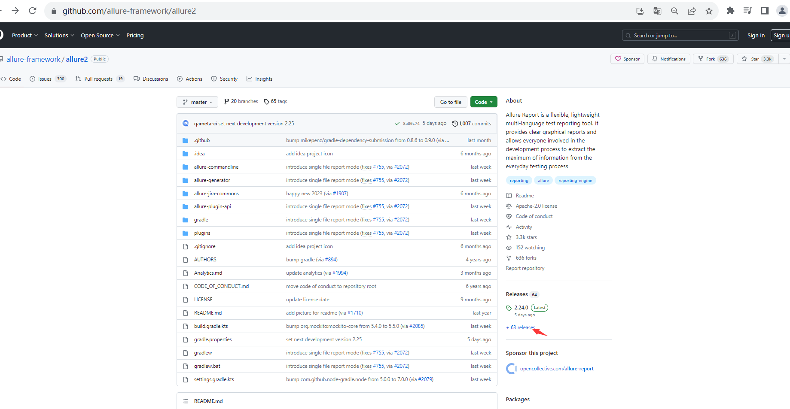
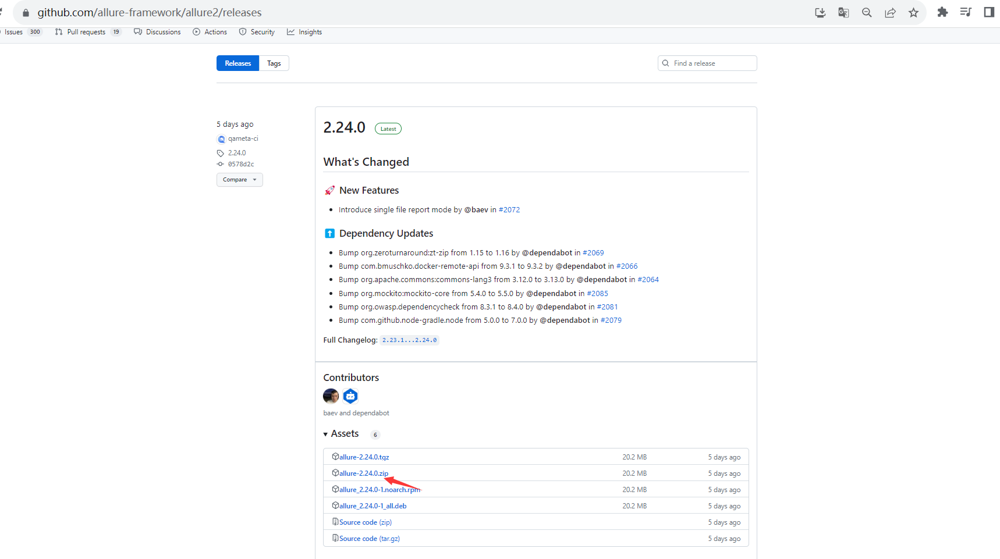
解压
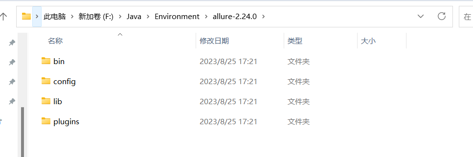
配置环境变量
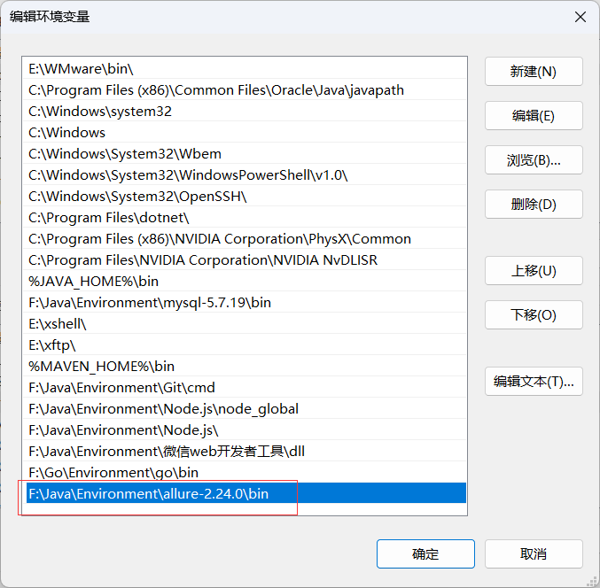
测试安装成功
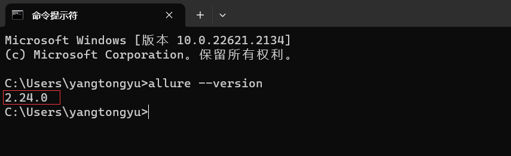
2.HelloWorld
- 测试框架：testng
- 测试报告：allure
1.pom.xml
1 | <!-- Allure TestNG --> |
2.编写测试用例
1 | package com.yang; |
3.生成
allure-results数据
1 | mvn clean test |
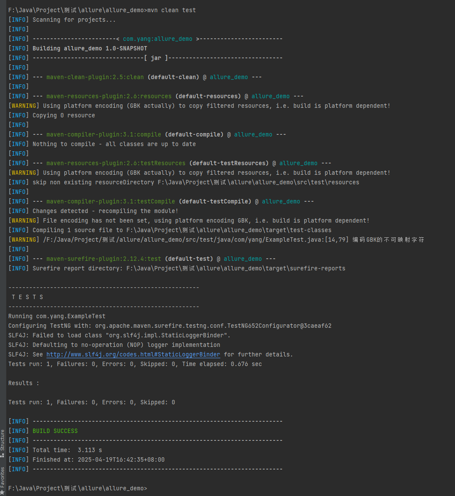
4.生成临时报告并启动本地服务器
1 | allure serve allure-results |
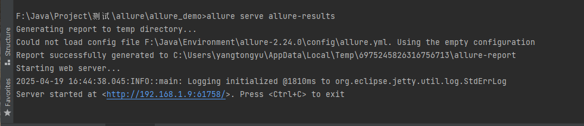
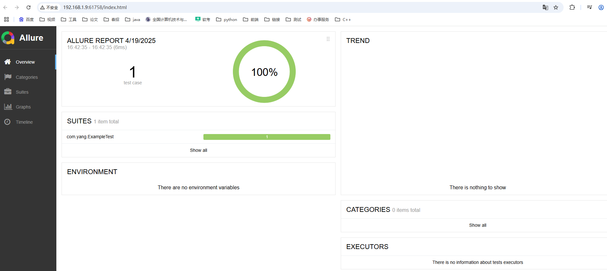
3.allure命令和注解
3.1 命令
常用命令
| 命令 | 作用 | 适用场景 |
|---|---|---|
mvn clean test |
清理项目并运行测试，生成 allure-results 数据 |
每次代码变更后执行测试 |
allure serve [path] |
从指定路径生成临时报告并启动本地服务器 | 快速查看最新测试结果 |
allure generate [path] |
生成静态 HTML 报告到指定目录（默认 allure-report） |
归档报告或集成到 CI/CD |
allure open [path] |
打开已生成的报告目录（需先执行 generate） |
本地查看历史报告 |
allure plugin |
管理 Allure 插件 | 安装/卸载插件 |
命令参数
allure generate参数详解1
allure generate [options] <结果目录> -o <报告输出目录>
常用参数
参数 说明 示例 --clean清空输出目录（如果存在） allure generate results --clean -o report-o或--output指定报告输出目录（默认为 allure-report）allure generate -o custom-report--config指定 allure.yml配置文件路径allure generate --config ./config/allure.yml--profile使用配置文件中指定的环境配置（需提前在 allure.yml中定义）allure generate --profile staging--report-dir同 -o，指定输出目录（旧版本兼容）allure generate --report-dir report
1
2# 清理旧报告并生成到指定目录
allure generate ./allure-results --clean -o ./allure-report --config ./allure.ymlallure serve参数详解1
allure serve [options] <结果目录>
常用参数
参数 说明 示例 -h或--host指定服务器监听的 IP 地址（默认 0.0.0.0）allure serve -h 127.0.0.1-p或--port指定服务器端口（默认 0随机端口）allure serve -p 8080--config指定配置文件路径（同 generate）allure serve --config ./allure.yml
1
2# 指定端口和配置文件
allure serve ./allure-results -p 9999 --config ./allure.ymlallure open参数详解1
allure open [options] <已生成的报告目录>
常用参数
参数 说明 示例 -h或--host同 serve，指定 IP 地址allure open -h localhost-p或--port同 serve，指定端口allure open -p 8080
1
2# 打开指定目录的报告
allure open ./allure-report -p 8888allure plugin参数详解命令 作用 示例 allure plugin list列出已安装插件 allure plugin listallure plugin install安装插件 allure plugin install allure-teamallure plugin uninstall卸载插件 allure plugin uninstall allure-team常用环境变量
变量名 作用 示例值 ALLURE_CONFIG指定默认 allure.yml配置文件路径export ALLURE_CONFIG=./config/allure.ymlALLURE_RESULTS_DIR默认结果目录（替代命令行参数） export ALLURE_RESULTS_DIR=./resultsALLURE_REPORT_DIR默认报告输出目录（替代 -o）export ALLURE_REPORT_DIR=./report
3.2 注解
3.2.1 常用注解
1.测试分层注解（三个层级）
| 注解 | 作用描述 | 层级定位 | 使用频率 |
|---|---|---|---|
@Epic、@Epics |
描述系统或产品的核心功能模块，通常对应业务需求中的“史诗级”功能 | 最高层级（宏观模块） | 每个 Epic 对应多个 Feature |
@Feature、@Features |
定义 Epic 下的具体功能模块，对应产品需求文档中的“功能点” | 中间层级（功能模块） | 每个 Feature 对应多个 Story |
@Story、@Stories |
描述用户故事或具体使用场景，对应敏捷开发中的“用户故事”（User Story） | 最底层级（用户场景） | 每个 Story 对应多个测试用例 |
1 | package com.yang; |
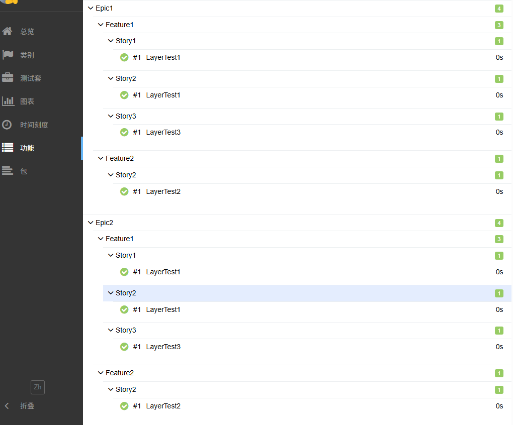
2.描述与优先级
| 注解 | 作用 | 示例 |
|---|---|---|
@Description |
添加测试用例描述 | @Description("验证正常登录流程") |
@Severity |
标记测试优先级 | @Severity(SeverityLevel.CRITICAL)，默认normal |
@Flaky |
标记不稳定的测试 | @Flaky |
1 | package com.yang; |
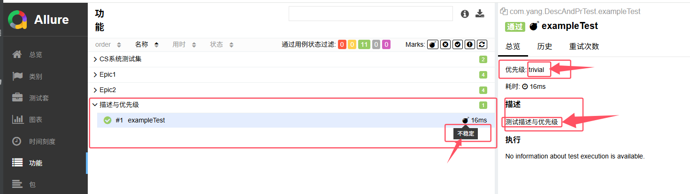
3.步骤与附件
| 注解 | 作用 | 示例 |
|---|---|---|
@Step |
定义测试步骤 | @Step("输入用户名 {username}") |
@Attachment |
添加附件（截图、日志等） | @Attachment(value="截图", type="image/png") |
@Step依赖 AspectJ 动态织入字节码，缺少依赖或配置错误会导致失效1
2
3
4
5
6
7
8
9
10
11
12
13
14
15
16
17
18
19<!-- 1. 添加 aspectjweaver 依赖 -->
<dependency>
<groupId>org.aspectj</groupId>
<artifactId>aspectjweaver</artifactId>
<version>1.9.7</version>
<scope>test</scope>
</dependency>
<!-- 2. 配置 maven-surefire-plugin -->
<plugin>
<groupId>org.apache.maven.plugins</groupId>
<artifactId>maven-surefire-plugin</artifactId>
<version>3.0.0</version>
<configuration>
<argLine>
-javaagent:"${settings.localRepository}/org/aspectj/aspectjweaver/1.9.7/aspectjweaver-1.9.7.jar"
</argLine>
</configuration>
</plugin>
1 | package com.yang; |
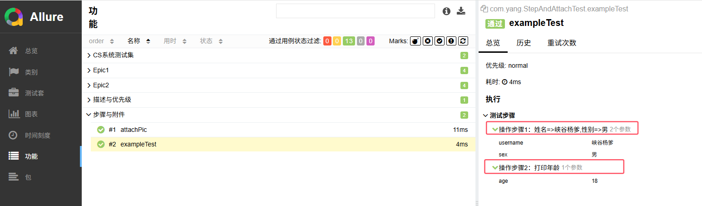
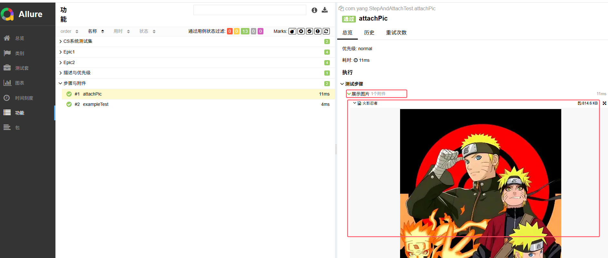
4.链接与跟踪
| 注解 | 作用 | 示例 | 典型关联系统 | 是否支持自定义名称 |
|---|---|---|---|---|
@Link、@Links |
通用链接（文档、需求、API等） | @Link(name="需求文档", url="https://...") |
无限制 | 是 |
@Issue、@Issues |
关联缺陷管理系统（Bug 单） | @Issue("BUG-123") |
Jira、Bugzilla | 否（默认显示 ID） |
@TmsLink、@TmsLinks |
关联测试用例管理系统（测试用例） | @TmsLink("TC-456") |
TestRail、Zephyr | 否（默认显示 ID） |
@Link：通用链接
用途：关联任意外部资源（需求文档、技术文档、API 参考等）
1
2// 自定义名称和链接
// 仅填写 URL（名称默认显示 URL）1
2
3
4
public void testPayment() { ... }
@Issue：关联缺陷（Bug 单）
用途：标记测试用例关联的缺陷 ID，常用于失败用例与 Bug 单的追踪
1
// 如 Jira 的 KEY-123
1
2
3
4
5
// 关联 Jira 缺陷 PAY-456
public void testFailedPayment() {
// 测试逻辑（假设失败）
}配置（在allure.yml中映射链接模板）
1
2
3
4allure:
links:
- type: issue
url-template: https://jira.example.com/browse/%s # %s 会替换为 @Issue 的值@TmsLink：关联测试用例
用途：将自动化测试与测试管理系统中的用例 ID 关联，便于跟踪覆盖
1
// 如 TestRail 的 C123
1
2
3
// 关联 TestRail 用例 C789
public void testLogin() { ... }配置（在allure.yml中映射链接模板）
1
2
3
4allure:
links:
- type: tms
url-template: https://testrail.example.com/index.php?/cases/view/%s
1 | package com.yang; |
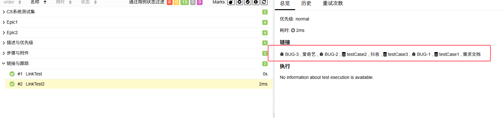
问题：
allure generate allure-results –config allure.yml –clean
Could not load config file allure.yml. Using the empty configuration
1 | allure: |
5.标记
| 注解 | 作用场景 | 典型使用位置 |
|---|---|---|
| @AllureId | 唯一标识测试用例（关联外部系统） | 测试方法/测试类 |
| @Owner | 标记测试用例的直接负责人 | 测试方法/测试类 |
| @Lead | 标记模块/项目的负责人（高层级） | 测试类/测试套件 |
@AllureId：唯一用例标识
用途：将测试用例与外部系统（如 Jira、TestRail）的 ID 关联，便于双向追踪
1
2
3
// 对应 TestRail 或 TestOps 中的用例 ID
void testLogin() { ... }
@Owner：用例负责人
用途：标记负责维护或验证该测试用例的团队成员
1
2
3
// 用例责任人
void testPayment() { ... }@：模块负责人
用途：标记模块或项目的整体负责人（更高层级）
1
2
3
// 模块负责人
void testCreditCard() { ... }
问题：@Lead、@AllureId未生效
3.2.2 其它注解
1 |
3.3 动态注解API
1.步骤控制
| 方法 | 作用 | 示例 |
|---|---|---|
Allure.step(String name) |
创建简单步骤 | Allure.step("点击登录按钮") |
Allure.step(String name, Runnable step) |
创建带逻辑的步骤（代码块） | Allure.step("输入用户名", () -> inputUsername("testuser")) |
Allure.step(StepContext step) |
嵌套步骤（支持子步骤） | 详见下方完整示例 |
- 参数与数据
| 方法 | 作用 | 示例 |
|---|---|---|
Allure.parameter(String name, Object value) |
添加参数到报告 | Allure.parameter("城市", "北京") |
Allure.parameter(String group, String name, Object value) |
分组参数（如用户信息组） | Allure.parameter("用户信息", "角色", "管理员") |
- 标签与分类
| 方法 | 作用 | 示例 |
|---|---|---|
Allure.label(String name, String value) |
添加自定义标签 | Allure.label("模块", "支付") |
Allure.epic(String epic) |
动态设置史诗 | Allure.epic("用户管理模块") |
Allure.feature(String feature) |
动态设置功能模块 | Allure.feature("登录功能") |
Allure.story(String story) |
动态设置用户故事 | Allure.story("手机号快捷登录") |
- 附件管理
| 方法 | 作用 | 示例 |
|---|---|---|
Allure.addAttachment(String name, String content) |
添加文本附件 | Allure.addAttachment("日志", "用户登录成功") |
Allure.addAttachment(String name, String type, InputStream stream, String extension) |
添加流式附件 | Allure.addAttachment("截图", "image/png", inputStream, ".png") |
Allure.addAttachment(String name, String type, byte[] content, String extension) |
添加字节数组附件 | Allure.addAttachment("截图", "image/png", screenshotBytes, ".png") |
- 链接与追踪
| 方法 | 作用 | 示例 |
|---|---|---|
Allure.link(String name, String url) |
添加通用链接 | Allure.link("需求文档", "https://doc.example.com") |
Allure.issue(String id, String url) |
关联缺陷（需配置模板） | Allure.issue("BUG-123", "https://jira.example.com/BUG-123") |
Allure.tms(String id, String url) |
关联测试用例（需配置模板） | Allure.tms("TC-456", "https://testrail.example.com/TC-456") |
4.生成中文测试报文
5.其它
5.1 修改报告标题
5.2 测试用例名称
6.测试项目组成
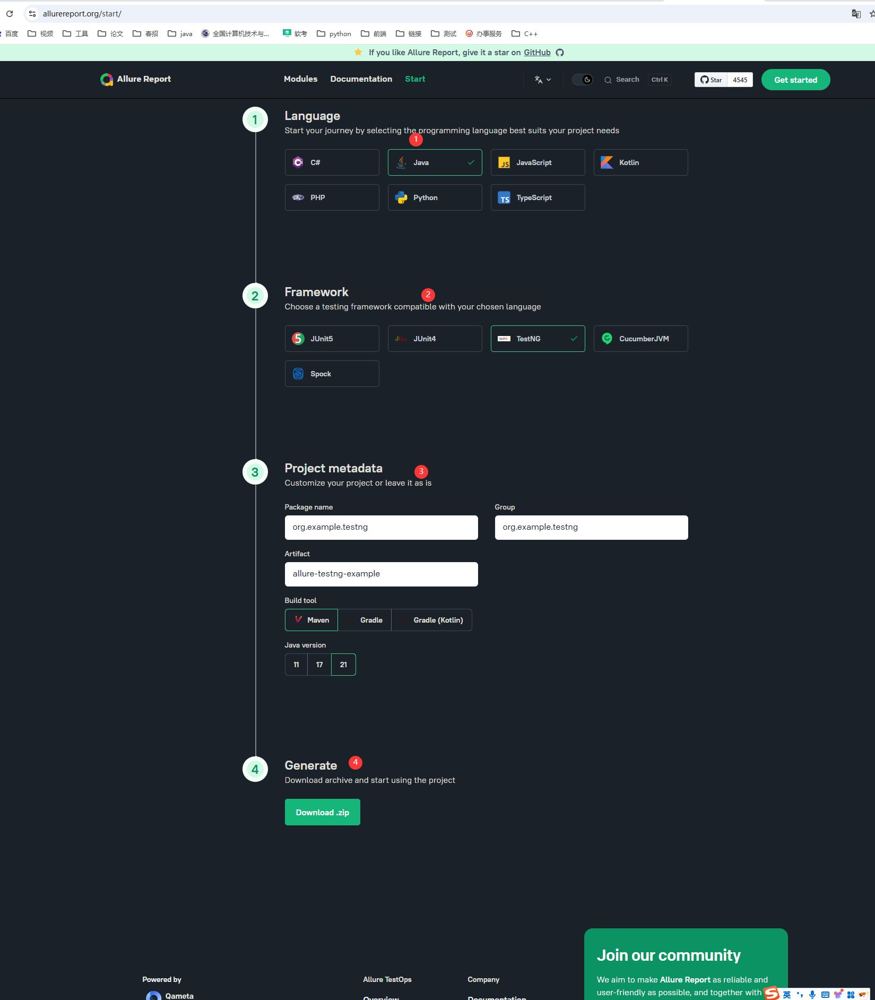
7.allure+junit5
新建maven项目
pom.xml
1
2
3
4
5
6
7
8
9
10
11
12
13
14
15
16
17
18
19
20
21
22
23
24
25
26
27
28
29
30
31
32
33
34
35
36
37
38
39
40
41
42
43
44
45
46
47
48
49
50
51
52
53
54
55
56
57
58
59
60
61
62
63
64
<project xmlns="http://maven.apache.org/POM/4.0.0"
xmlns:xsi="http://www.w3.org/2001/XMLSchema-instance"
xsi:schemaLocation="http://maven.apache.org/POM/4.0.0 http://maven.apache.org/xsd/maven-4.0.0.xsd">
<modelVersion>4.0.0</modelVersion>
<groupId>com.yang</groupId>
<artifactId>AllureHelloworld</artifactId>
<version>1.0-SNAPSHOT</version>
<properties>
<maven.compiler.source>8</maven.compiler.source>
<maven.compiler.target>8</maven.compiler.target>
<!--allure测试报告中文乱码-->
<project.build.sourceEncoding>UTF-8</project.build.sourceEncoding>
</properties>
<dependencies>
<!-- https://mvnrepository.com/artifact/org.seleniumhq.selenium/selenium-java -->
<dependency>
<groupId>org.seleniumhq.selenium</groupId>
<artifactId>selenium-java</artifactId>
<version>4.11.0</version>
</dependency>
<!-- https://mvnrepository.com/artifact/io.qameta.allure/allure-junit5 -->
<dependency>
<groupId>io.qameta.allure</groupId>
<artifactId>allure-junit5</artifactId>
<version>2.23.0</version>
</dependency>
<dependency>
<groupId>junit</groupId>
<artifactId>junit</artifactId>
<version>4.13.2</version>
</dependency>
<!-- https://mvnrepository.com/artifact/org.slf4j/slf4j-nop -->
<dependency>
<groupId>org.slf4j</groupId>
<artifactId>slf4j-nop</artifactId>
<version>2.0.7</version>
</dependency>
</dependencies>
<build>
<plugins>
<!-- Maven Surefire Plugin -->
<plugin>
<groupId>org.apache.maven.plugins</groupId>
<artifactId>maven-surefire-plugin</artifactId>
<version>3.0.0-M5</version>
<!-- 配置生成 Allure 报告 -->
<configuration>
<testFailureIgnore>true</testFailureIgnore>
<!-- 配置 Allure 测试结果目录 -->
<argLine>-Dallure.results.directory=target/allure-results</argLine>
</configuration>
</plugin>
</plugins>
</build>
</project>